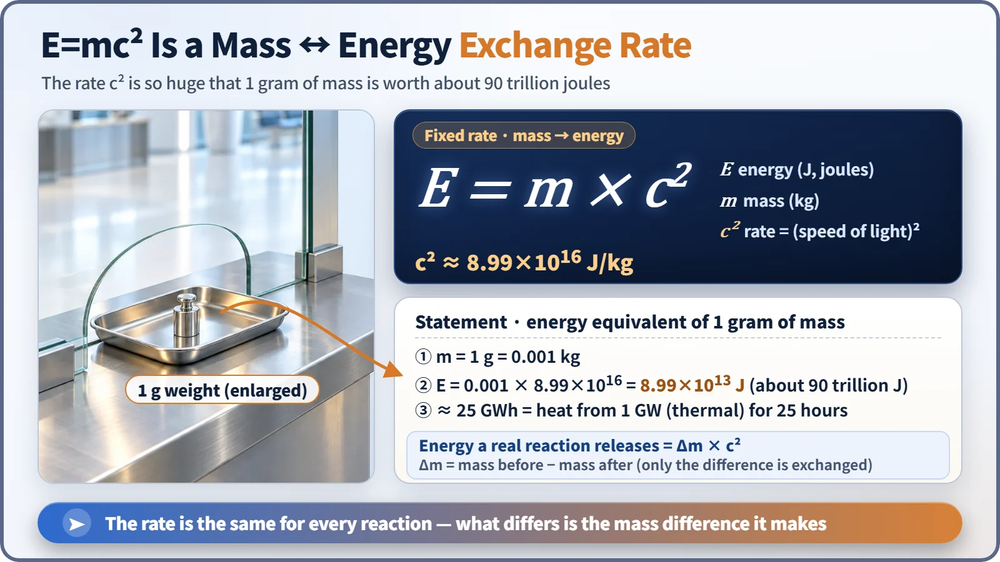
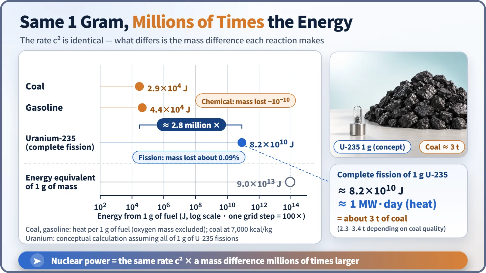

Nuclear & Radiation Basics · 008
The Universe's Currency Exchange — What E=mc² Really Does in Nuclear Power
The exchange rate c² is the same for every reaction. Fission wins because it exchanges about a thousandth of its mass, not a ten-billionth.
E=mc² says mass and energy are two currencies of equal value, exchanged at a fixed rate of c², about 9×1016 joules per kilogram. That rate is the same for burning coal and for splitting uranium. Fission is millions of times stronger per gram only because it exchanges about one thousandth of its mass, while chemistry exchanges about one ten-billionth. [1]
A very strange rate on the airport board
Ever changed money at an airport kiosk before a trip abroad? A glowing board lists the rates, "1 dollar = so many euros," and the clerk swaps your cash by that number. Now picture a board showing this instead:
1 kilogram of mass = 90,000,000,000,000,000 joules of energy
That's sixteen zeros. This absurd-looking rate is exactly what Einstein published in 1905: E=mc². It declares that mass and energy are two currencies of the same value, and you can exchange one for the other. Here is what the formula does in a nuclear power plant, and why the popular phrase "mass disappears" gets it wrong.
How to read the rate board: E, m and c²
E is energy, measured in joules (J). One joule is tiny: roughly the energy needed to lift an apple (about 100 g) by one meter. m is mass, in kilograms (kg). c is the speed of light, about 300,000 kilometers per second.
The star of the show isn't c but c², the speed of light squared. Work it out and you get about 9×1016, a 9 followed by sixteen zeros. At our exchange kiosk, that number is the exchange rate: hand over 1 kg of mass and you get 9×1016 J back. [2]
Exchange a single gram, about the mass of a paperclip, in full: 0.001 kg × 9×1016 = about 9×1013 J. On an electricity bill that's roughly 25 million kilowatt-hours (25 GWh), matching the heat a facility with 1 gigawatt of thermal output produces in a bit more than a full day. From one gram.

Same rate, different amount at the window
Many people conclude that nuclear energy is powerful because c² is huge. That's half right, because the very same rate applies when you burn firewood.
When a carbon atom in coal combines with oxygen to form carbon dioxide, each molecule releases about 4 eV (electronvolts, a very small energy unit used in the atomic world). The products end up slightly lighter too: burn 12 g of carbon and about 4.4 nanograms go missing, roughly one ten-billionth of the total. No scale can measure that, but chemical reactions pass through the E=mc² window as well. [3]
When a single uranium-235 nucleus splits, it releases about 200 MeV (200 million electronvolts) at once, about 50 million times a single carbon-burning event. The mass that goes missing is about 0.09% of the original, roughly one part in a thousand. [1]
So the rate is identical; what differs is the amount you put on the counter. Chemistry exchanges one ten-billionth of the wallet; fission exchanges one thousandth. That gap becomes a difference of millions of times in the energy one gram of fuel can deliver.

One gram of uranium equals how much coal?
One gram of uranium-235 contains about 2.56×1021 nuclei. If every one splits, at 200 MeV each, you get about 8.2×1010 J. The nuclear industry remembers this as about 1 megawatt-day (MW·day): 1 megawatt of output sustained for a whole day. [1]
| Fuel (1 g) | Energy released |
|---|---|
| Coal (7,000 kcal/kg basis) | about 2.9×104 J |
| Gasoline | about 4.4×104 J |
| Uranium-235, complete fission | about 8.2×1010 J ≈ 1 MW·day |
| All of the mass converted (theoretical ceiling) | about 9.0×1013 J |
Getting the same energy from coal takes about 3 tonnes, depending on the coal's quality: roughly 2.8 million times the weight. That's why a nuclear plant, once loaded, runs for more than a year without refueling and doesn't need trainloads of fuel every day the way a coal plant does. [4]
This is a conceptual calculation for 1 gram of pure U-235, all of it fissioned. Real reactor fuel contains U-235 at only a few percent, and only part of it fissions. Even so, it delivers incomparably more energy than the same weight of coal.
Time to retire "mass disappears"
Not a single proton or neutron is lost. The numbers of protons and neutrons are the same before and after fission. The fragment nuclei are simply bound more tightly than the original uranium, so they are slightly lighter by exactly that difference in binding energy.
The mass difference didn't evaporate; it moved into energy. Most fission energy is the kinetic energy of fragments flying apart at tremendous speed. As they slam to a stop inside the fuel, that motion becomes heat, and the cooling water carries it away to make steam. Here the currency analogy breaks down: in physics the energy you receive stays on the books with the same value as mass. The combined total of mass and energy is always conserved.
The 9×1013 J from converting a whole gram is a theoretical ceiling. Fission draws out only about one thousandth of it, a surprisingly restrained reaction.
Key takeaways
E=mc² makes mass and energy two currencies of equal value at a rate of c² (about 9×1016 J/kg). The rate is the same for chemical and nuclear reactions; fission exchanges about 200 MeV per event, roughly one thousandth of the original mass, which is why it is millions of times stronger than coal. Mass does not vanish: the lightness of the more tightly bound fragments becomes kinetic energy, and then heat. A reactor is a place that exchanges at that cosmic window a little at a time, steadily.